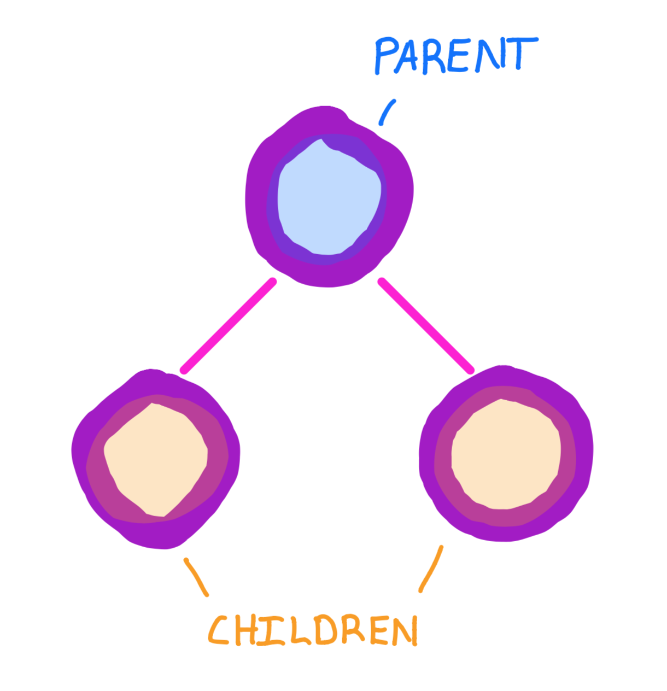
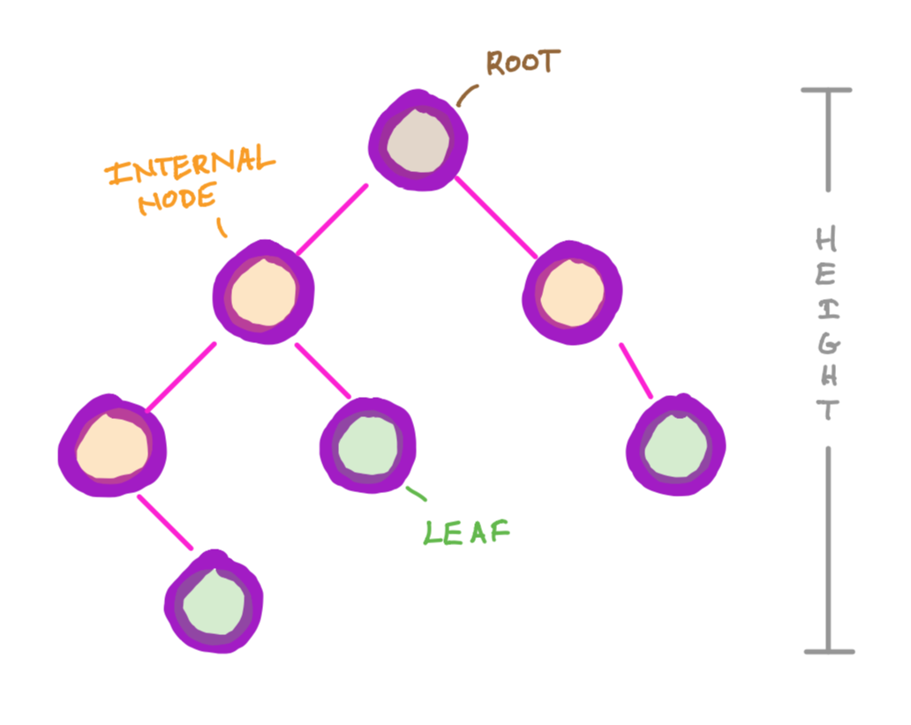
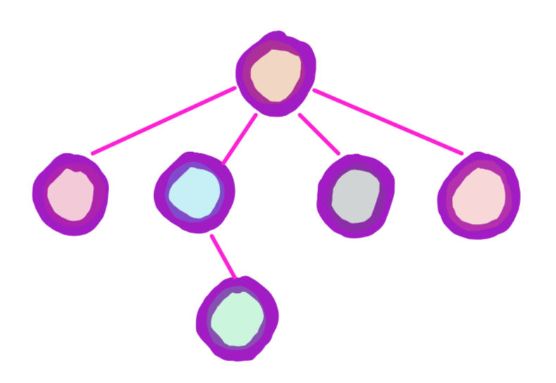
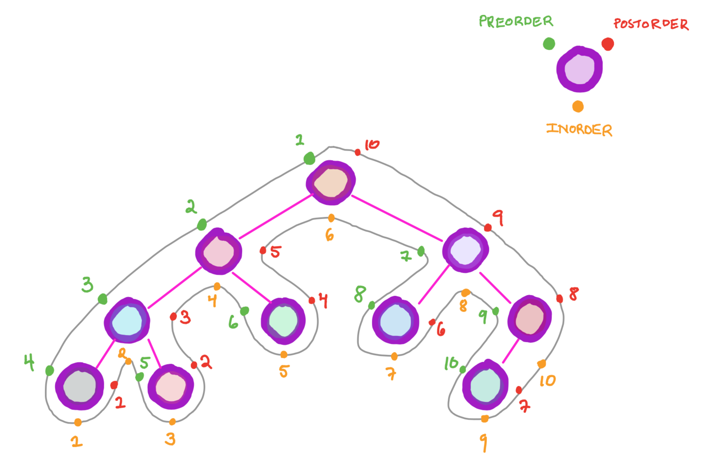
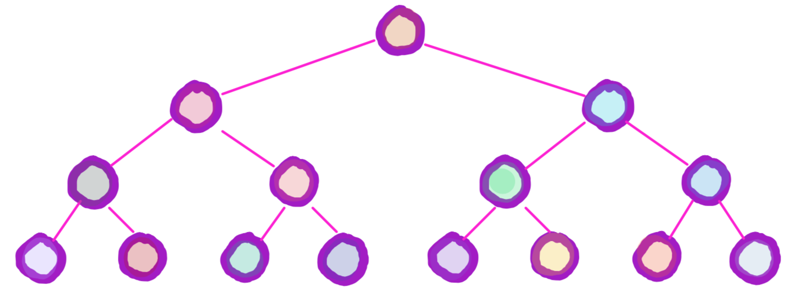
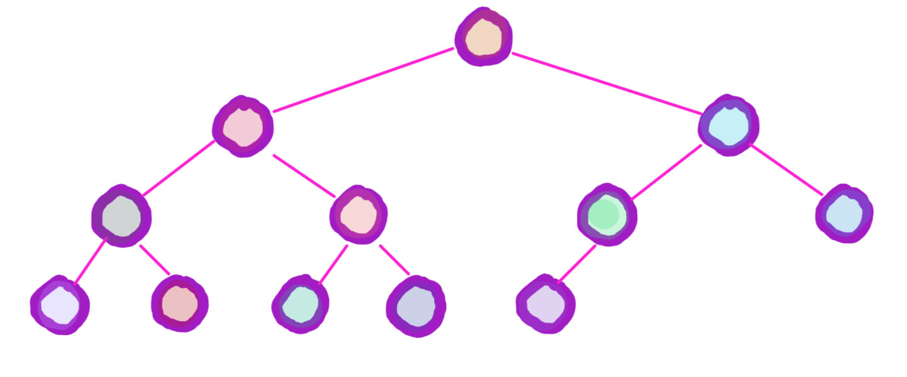
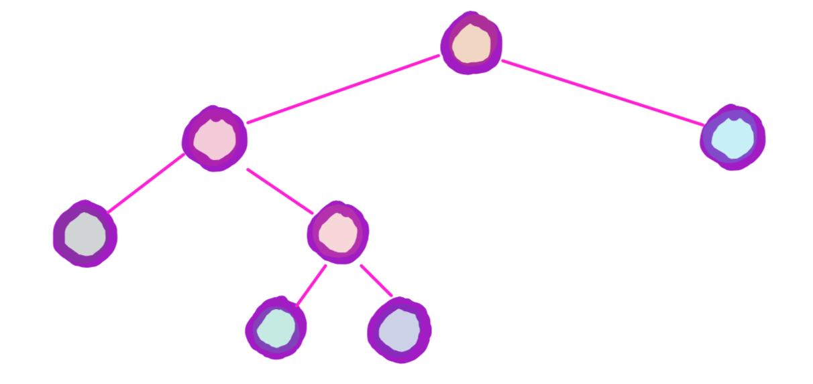

Nodes in a tree can have a parent and/or children

The top node is called the root.
Nodes with no children are leaves. All other nodes are internal. The height of a tree is one less than the number of levels. For example, an empty tree has height -1 and a tree with just the root has height 0

This is a 4-ary tree. An n-ary has a maximum of n children among all of its nodes.
In this course, we mainly study 2-ary (binary) trees, which are trees with at most 2 children per node
Traversals
Since nodes in a tree can have multiple children, there are multiple ways of traversing trees. Here we discuss three main traversals:
Preorder: Visit the current node, then recursively preorder traverse on the left subtree and right subtree
Inorder: Recursively inorder traverse on the left subtree, then visit the current node, and then recursively inorder traverse on the right subtree
Postorder: Recursively postorder traverse on the left subtree and right subtree, and then visit the current node

Preorder, Inorder, and Postorder traversals of a tree
Types of Trees
Perfect

Every level is completely filled
Complete

Every level except for the last is completely filled, and in the last level all the nodes are pushed to the left as much as possible
Full

Every node either has no children or the maxmimum number of children possible